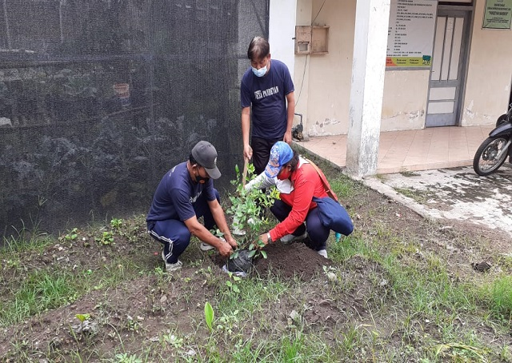

Reboisasi merupakan salah satu bentuk kepedulian manusia terhadap
alam yang perlu dilakukan karena jika tidak maka alam bisa saja
menjadi rusak. Sebagai salah satu generasi muda dunia, harus
memberikan aksi nyata dengan melakukan reboisasi ini. reboisasi
sebenarnya tidak hanya bisa dilakukan di area hutan saja namun
juga bisa dilakukan di dalam lingkungan sekitar dengan membuka
lahan hijau.
Manfaat protektif, manfaat pohon salah satunya juga bisa digunakan
sebagai pelindung terutama untuk manusia. Pelindung di sini adalah
bisa menahan angin kencang, sinar matahari secara langsung,
peredam suara dan penahan debu. Manfaat lainnya adalah dapat
melindungi manusia dari terjangan banjir, erosi dan tanah
longsor.
Kurangnya resapan air disebabkan oleh kurangnya pohon di daerah
tersebut yang biasanya disebabkan oleh penebangan yang tidak
terkendali. Oleh karena itu, sistem tebang pilih perlu digunakan
terutama untuk menanam pohon berakar besar agar penyerapan air
bisa lebih cepat. Selain itu untuk di wilayah perkotaan juga perlu
diperbanyak kawasan atau lahan terbuka hijau.
Pohon yang telah ditebang sebaiknya ada penggantinya. Menebang
pohon yang telah berkayu kemudian di tanam kembali tunas pohon
yang baru. Hal ini ditujukan untuk regenerasi hutan dengan tujuan
hutan tidak menjadi gundul.
Reboisasi
